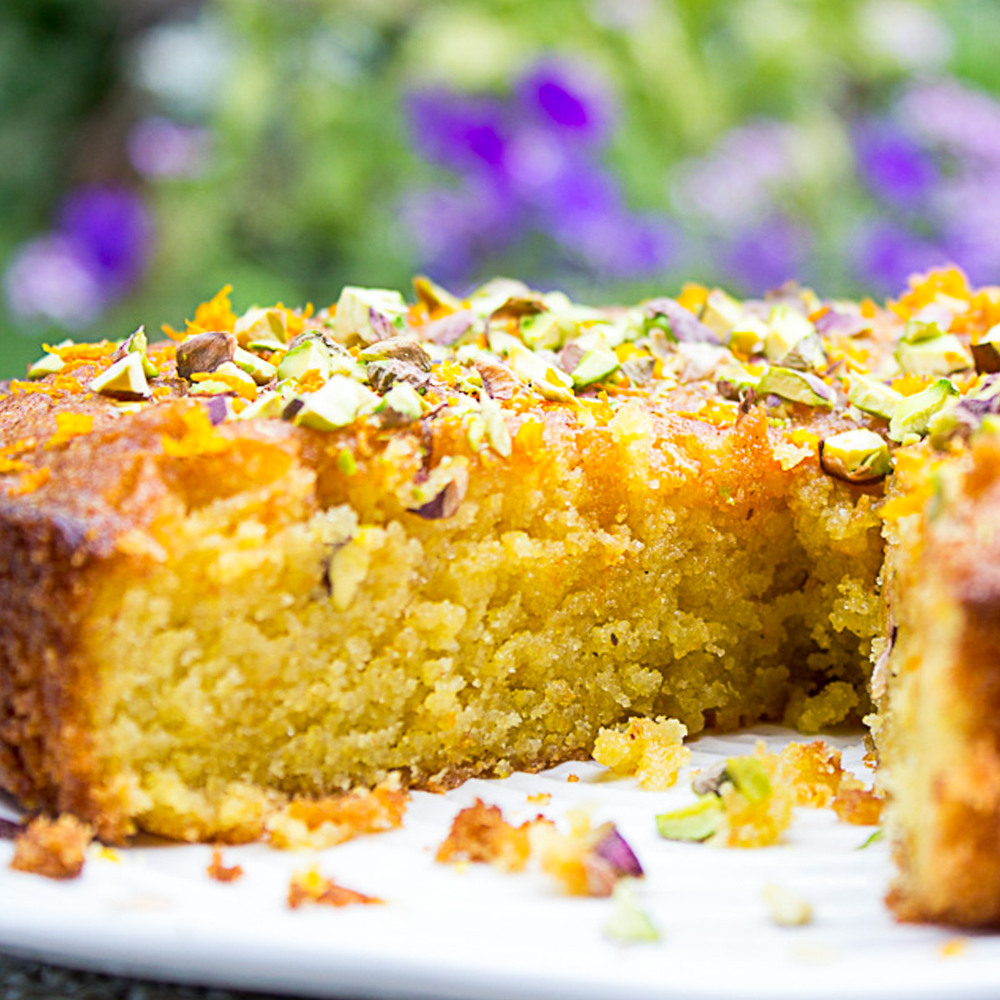

-
아포가토 딜라이트Affogato Delight
신선한 바닐라 젤라토 위에 FLORÉ의 시그니처 에스프레소를 부어 즐기는 디저트.
부드럽고 달콤한 젤라토와 깊고 진한 에스프레소의 만남은 단순한 디저트를 넘어선 완벽한 하모니를 제공합니다. FLORÉ에서 이탈리아의 여유를 느껴보세요.
-

에스프레소 사바용Espresso Sabayon
달걀과 설탕, FLORÉ만의 에스프레소로 만든 부드럽고 크리미한 디저트.
따뜻하고 달콤한 사바용은 커피의 풍미를 한층 더 극대화하며, 입안에서 부드럽게 녹아내리는 특별한 질감을 선사합니다.
-
헤이즐넛 부디노Hazelnut Budino
이탈리아식 푸딩 디저트로, 헤이즐넛 크림과 초콜릿이 어우러진 부드러운 맛이 특징.
깊고 풍부한 헤이즐넛 향이 돋보이는 부디노는 커피 한 잔과 함께 완벽한 마무리를 선사합니다. FLORÉ의 정성이 담긴 디저트로 특별한 시간을 만들어 보세요.
-

오렌지 폴렌타 케이크Orange Polenta Cake
옥수수 폴렌타와 신선한 오렌지즙으로 구워낸 촉촉한 글루텐프리 케이크.
전통적인 폴렌타 케이크에 오렌지의 산뜻한 풍미를 더해, 가벼우면서도 만족스러운 디저트를 완성했습니다. FLORÉ의 건강하고 맛있는 선택입니다.
-
초콜릿 올리브 오일 케이크Chocolate Olive Oil Cake
고급 올리브 오일과 진한 초콜릿으로 만들어낸 촉촉한 케이크.
올리브 오일이 더해진 초콜릿 케이크는 기존 디저트와는 다른 특별한 질감과 고소한 풍미를 선사합니다. 한 입에 우아함을 담아내는 FLORÉ만의 독창적인 레시피를 만나보세요.
-
카라멜라이즈드 페어 타르트Caramelized Pear Tart
얇게 썬 배를 캐러멜라이즈해 바삭한 타르트 위에 얹은 디저트.
은은한 배의 단맛과 캐러멜의 깊은 풍미가 어우러져, 따뜻하고 달콤한 만족감을 선사합니다. FLORÉ의 타르트는 디저트를 넘어 하나의 예술 작품입니다.